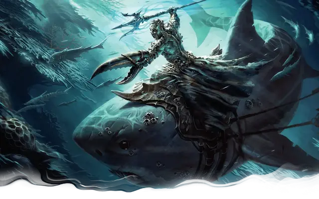

Гар Шаттеркил
Gar Shatterkeel
Средний Гуманоид (Человек), нейтрально-злой, именной НИП

Класс Доспеха 16 (природный доспех)
Хиты 112 (15к8 + 45)
Скорость 30 футов, плавая 30 футов
| мод | спас | ||
|---|---|---|---|
| СИЛ | 15 | +2 | +2 |
| ЛОВ | 15 | +2 | +2 |
| ТЕЛ | 16 | +3 | +3 |
| мод | спас | ||
|---|---|---|---|
| ИНТ | 12 | +1 | +1 |
| МДР | 18 | +4 | +4 |
| ХАР | 13 | +1 | +1 |
Навыки Выживание +8, Природа +8
Сопротивление урону холод
Чувства пассивное Восприятие 14
Языки Общий, Акван
Опасность 9 (5000 опыта)
Бонус мастерства +4
Особенности
Амфибия. Гар может дышать и воздухом, и под водой.
Легендарное сопротивление (2/день). Если Гар проваливает спасбросок, он может вместо этого сделать спасбросок успешным.
Использование заклинаний. Гар является заклинателем 9-го уровня. Его базовой характеристикой является Мудрость (Сл спасброска от заклинаний 16, +8 к атакам заклинаниями). У него подготовлены следующие заклинания друида:
• Заговоры (неограниченно):починка[mending], сопротивление [resistance], формование воды [shape water]
• 1 уровень (4 ячейки):сотворение или уничтожение воды[create or destroy water], лечение ран [cure wounds], туманное облако [fog cloud], волна грома [thunderwave]
• 2 уровень (3 ячейки):тёмное зрение[darkvision], удержание личности [hold person], защита от яда [protection from poison]
• 3 уровень (3 ячейки):призыв молнии[call lightning], метель [sleet storm], приливная волна [tidal wave]
• 4 уровень (3 ячейки):власть над водами[control water], град [ice storm]
• 5 уровень (1 ячейка):наблюдение[scrying]
Хождение по воде. Гар может передвигаться по поверхностям жидкостей и стоять на них как на твёрдой земле.
Расплёскивание. Когда хиты Гара снижаются до 0, его тело разливается лужей воды, по цвету напоминающей чернила, а потом быстро испаряется. Все вещи, которые были на нём надеты или которые он носил при себе, остаются лежать на земле.
Действия
Мультиатака. Гар совершает две рукопашные атаки: одну атаку клешнёй, вторую — Топителем.
Клешня. Рукопашная атака оружием: +6 к попаданию, досягаемость 5 фт., одна цель. Попадание: дробящий урон 9 (2к6 + 2) и цель схвачена (Сл высвобождения 13). Пока цель схвачена, Гар не может атаковать других существ своей клешнёй.
Топитель. Рукопашная или дальнобойная атака оружием: +7 к попаданию, досягаемость 5 фт. или дистанция 20/60 фт., одна цель. Попадание: колющий урон 6 (1к6 + 3) плюс урон холодом 4 (1к8).
Логово
В узле воды. Когда храму Сокрушительной Волны угрожает опасность, Гар отступает к Ниспадающим Потокам, в узел воды. Здесь Гар получает дополнительное использование своей способности «легендарное сопротивление».
Действия логова
Если Гар находится в узле воды, без Ольгидры, он может использовать действия логова, его показатель опасности увеличивается до 13 (10000 опыта). При значении инициативы «20» (в случае ничьей проигрывает всем конкурентам) действие логова позволит Гару либо использовать мультиатаку, либо сотворить одно из его заклинаний не выше 3-го уровня, не тратя материальные компоненты и ячейки заклинаний.
Он не может использовать одно и то же заклинание два раунда подряд, хотя он может продолжить концентрироваться на заклинании, вызванном действием логова ранее. Гар не может совершать иных действий логова, если он концентрируется на заклинании, вызванном действием логова. Как правило, он использует действия логова для накладывания заклинаний лечение ран [cure wounds] и призыв молнии [call lightning].
Если Гар произносит заклинание лечение ран [cure wounds], используя действие логова, то восстанавливает максимально возможное количество хитов (28).
Описание
Озлобленный от жизни, полной страданий, произошедших по вине других людей, Гар Шаттеркил теперь служит Элементальному Злу в качестве пророка воды и сурового лидера культа Сокруши тельной Волны. В годы его юности пираты выреза ли всю его семью, после чего у него не было иного выхода, кроме как пойти матросом на торговое судно. Этот корабль тоже пал жертвой другой банды морских разбойников, которые бросили его на верную смерть в открытом море, где ему оторвала руку акула. Единственная ценность, оставшаяся у Гара в этой жизни, — это сила, дарованная ему стихией воды, и до недавнего времени он собирал подле себя тех, кто разделяет его мнение.
Гар владеет элементальным оружием по имени Топитель. Отсутствующую руку ему заменяет искусственная конечность в форме крабьей клешни.
Как лидер культа Ольгидры, он носит в себе присущую ей волшебную силу, а остальные члены культа Сокрушительной Волны чувствуют эту магию вну три него и подчиняются ему из страха.